Chatbots
Aplicaciones
Salud mental y emocional: Woebot o Wysa son chatbots de IA que están enfocados en ayudar a las personas mediante el uso de la terapia cognitiva y conductual. Estas aplicaciones nunca están fuera de servicio y ayudan a los usuarios a encontrar formas de lidiar con el estrés y la ansiedad. Además, a través de técnicas de cuestionamiento efectivas y avanzadas, pueden verificar constantemente el estado de ánimo del usuario.
Apoyo en el lugar de trabajo: Se puede proporcionar ayuda relacionada con la gestión del estrés y consejos sobre gestión del estrés a través de algunos chatbots especializados como SAP Conversational AI y redirigir a los empleados a recursos internos relevantes.
Gestión de crisis: Crisis Text Line es una de las plataformas que combina chat con análisis automatizado utilizando algoritmos de lenguaje de IA que determinan la gravedad del caso y el orden en que debe actuarse. Algunas versiones avanzadas combinan el reconocimiento de patrones textuales y vocales con el análisis de este fenómeno en la evaluación de la amenaza.
Educación emocional: Con un enfoque en el uso independiente y coherente, para ayudar a fortalecer la resiliencia emocional se han introducido chatbots como TalkSpace que enseñan habilidades de regulación emocional.
Woebot
Combina la inteligencia artificial con enfoques psicológicos y mejora la salud mental. En cuanto al bienestar mental, Woebot también utiliza el procesamiento del lenguaje natural para responder en tiempo real a una multitud de preocupaciones sobre el bienestar.
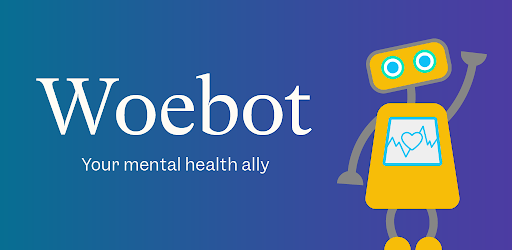Replika
Este chatbot actúa como un compañero virtual, ayudando a mejorar las habilidades sociales al participar en intercambios significativos y empáticos.
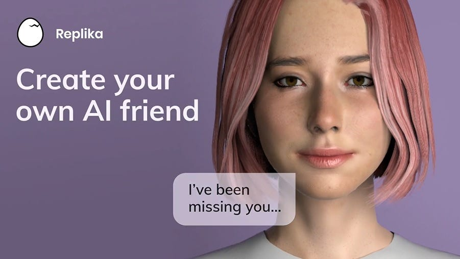Koko
Utiliza inteligencia artificial para brindar apoyo conectando a los usuarios con grupos anónimos en crisis o ruptura emocional.
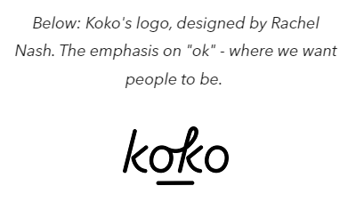Aplicaciones móviles
Aplicaciones
Seguimiento del bienestar: Headspace y Calm son herramientas habilitadas por IA que proporcionan recomendaciones sobre qué ejercicios de meditación y relajación realizar. Además, estas aplicaciones llevan un registro del sueño, así como del nivel de actividad física y brindan retroalimentación para mejorar la integración de la mente y el cuerpo.
Construcción de la resiliencia: Resilience Trainer es una aplicación que utiliza cuestionarios interactivos así como algoritmos adaptativos para construir fortaleza mental. También hay juegos en estas aplicaciones que se basan en la psicología positiva y permiten a los usuarios experimentar el uso de habilidades de afrontamiento en la práctica.
Gamificación y compromiso: SuperBetter es una de las plataformas que se ha encontrado que utiliza mecánicas de juego para trabajar la creatividad en la resolución de problemas al crear objetivos basados en la teoría de la autodeterminación.
Happify
Proporciona juegos y ejercicios que están destinados a desarrollar la fuerza emocional y afrontar el estrés. Además, utiliza IA para rastrear el progreso del usuario y modificar los desafíos establecidos para él.
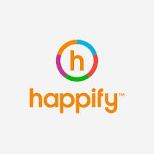BetterUp
Ayuda a realizar una evaluación basada en IA para saber dónde puede evolucionar la persona personalmente y profesionalmente. Incluye coaching virtual mejorado por IA para avanzar en habilidades socioemocionales.
Daylio
Es una aplicación de diario de seguimiento del estado de ánimo que propone hábitos positivos de acuerdo con sistemas de IA basados en los patrones de comportamiento pasados del usuario.
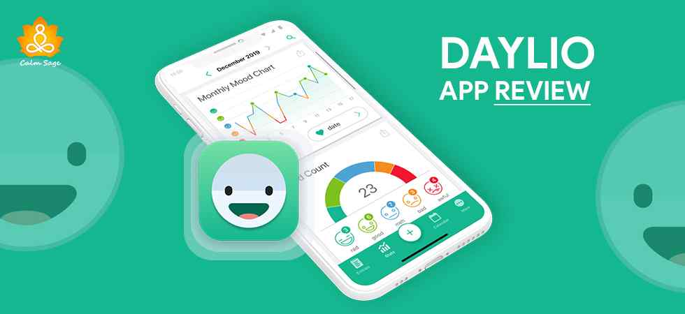SuperBetter
Recomienda tareas diarias atractivas para moldear la mentalidad correcta, así como prepararse para enfrentar problemas bastante difíciles.
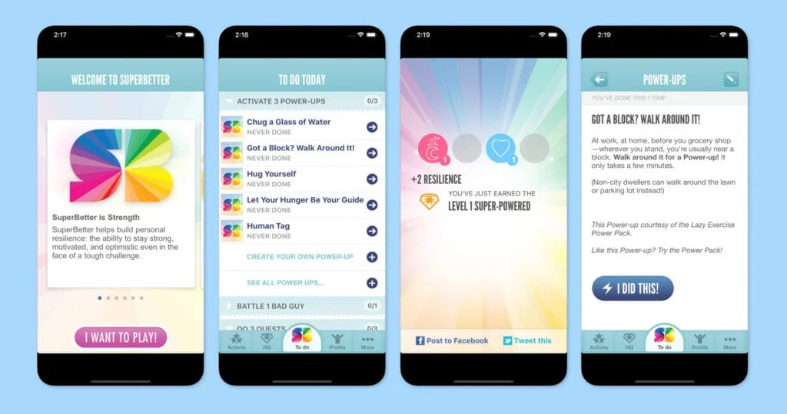Simuladores
Aplicaciones
Preparación para desastres: Organizaciones gubernamentales como la FEMA de Estados Unidos NIMS despliegan IA para simular situaciones de crisis y ser mejores tomadores de decisiones para el personal de emergencia. Este tipo de simuladores también trabajan para prever diferentes tipos de impactos antes de desastres reales con el fin de prevenir o minimizar sus daños.
Entrenamiento en resiliencia: Algunas empresas mejoran sus simuladores existentes e integran realidad virtual, junto con algoritmos de IA para capacitar e instruir a los usuarios en la gestión del estrés y la rápida adaptación durante situaciones críticas. Por ejemplo, los simuladores pueden recrear condiciones laborales exigentes o escenarios de rescate y probar la eficiencia en la toma de decisiones de los operadores.
Educación basada en escenarios: Herramientas como MyCrisis intentan aliviar estas preocupaciones al ofrecer recursos interactivos en los que se espera que el usuario sea colocado en diversas situaciones de recursos de emergencia y se evalúe el impacto potencial de sus decisiones.
Virtual Reality Resilience Training
Esto implica el uso de aplicaciones basadas en IA para mejorar la respuesta a la exposición al estrés. Tales sistemas son capaces de modificar los niveles de complejidad en línea de acuerdo con las capacidades del usuario.
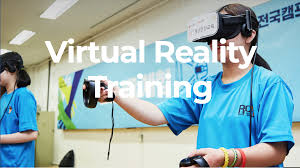Project ARIES
Es una plataforma de simulación para la evaluación del comportamiento humano en un escenario de cambio climático.
CrisisVR
Es un entrenamiento de simulación virtual para fuerzas de seguridad y líderes en la toma de decisiones en violencia geopolítica.
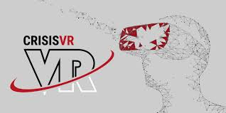IA para cada nivel de estrés
Para los distintos manejos del estrés, existen distintas inteligencias artificiales que nos pueden ayudar a canalizar nuestras emociones dependiendo del nivel de estrés en el que nos encontremos. Por ejemplo, Meta AI o ChatGPT nos pueden ayudar con pequeños problemas que nosotros podamos tener, con nervios, confusiones o simplemente desahogarse. Sin embargo, hay distintas inteligencias artificiales que cumplen con la función de poder ayudarnos con problemas más específicos y dependiendo de nuestro nivel de estrés. A continuación, se presentan algunas IA que nos pueden ayudar dependiendo el nivel de estrés en el que nos encontremos:
Yana
Yana está diseñada para fortalecer y mejorar el bienestar emocional, ya sea en momentos de tristeza, ansiedad o simplemente para llevar un registro de tus sentimientos. Esta app funciona como un chatbot o amigo virtual, ayudándote a desahogar tus emociones y a monitorear tu estado de ánimo. Utiliza herramientas de terapia cognitivo-conductual para identificar y transformar pensamientos negativos en percepciones más saludables.
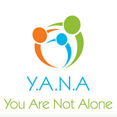Wysa
Wysa utiliza un simpático pingüino como guía para ayudarte a través de los altibajos de la vida. Con técnicas basadas en la terapia dialéctica conductual, terapia cognitivo-conductual, yoga y meditación, Wysa está diseñada para apoyarte en momentos de estrés, ansiedad, problemas de sueño y más.
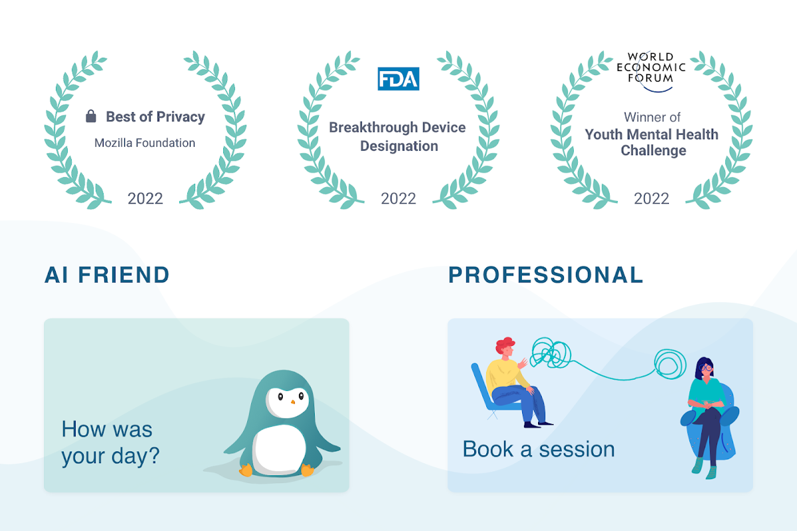Bambú
Bambú es una aplicación en español que te ayuda a meditar, relajarte y dormir mejor. Ideal para principiantes o expertos en meditación, con sesiones que varían desde 3 minutos en adelante. Ofrece una versión gratuita y contenido adicional mediante suscripción.
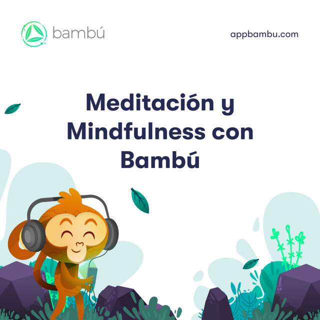Woebot
Woebot actúa como terapeuta virtual para poder leer y escuchar tus problemas emocionales, ayudándote a manejar el estrés, la ansiedad y la depresión. Aunque no reemplaza a un terapeuta humano, ofrece una opción accesible y anónima para quienes buscan ayuda inicial.
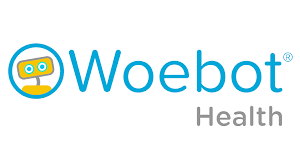